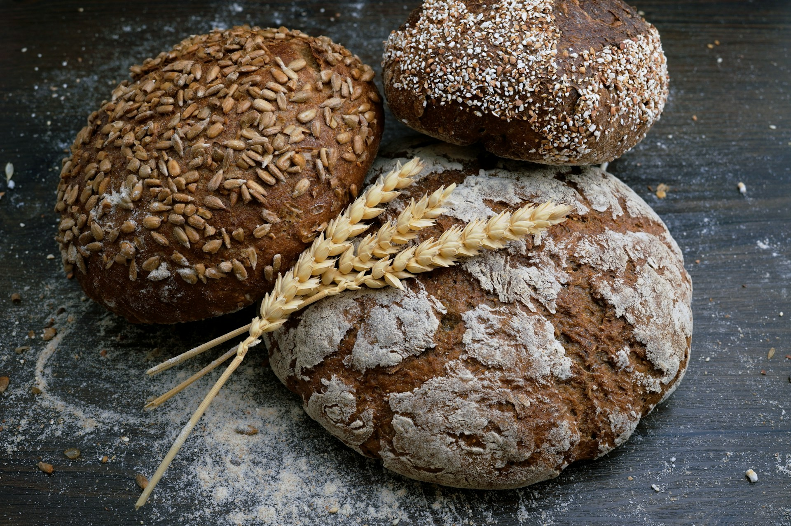

Irish Soda Bread

Ingredients
- 250g plain white flour
- 250g plain wholemeal flour
- 100g porridge oats
- 1 tsp bicarbonate of soda
- 1 tsp salt
- 25g butter, cut in pieces
- 500ml buttermilk
Instructions
- Step 1: Preheat the oven to 200C/gas 6/fan 180C and dust a baking sheet with flour. Mix the dry ingredients in a large bowl, then rub in the butter. Pour in the buttermilk and mix it in quickly with a table knife, then bring the dough together very lightly with your fingertips (handle it very, very gently). Now shape it into a flat, round loaf measuring 20cm/8in in diameter.
- Step 2: Put the loaf on the baking sheet and score a deep cross in the top. (Traditionally, this lets the fairies out, but it also helps the bread to cook through.) Bake for 30-35 minutes until the bottom of the loaf sounds hollow when tapped. If it is not ready after this time, turn it upside down on the baking sheet and bake for a few minutes more.
- Step 3: Transfer to a wire rack, cover with a clean tea towel (this keeps the crust nice and soft) and leave to cool. To serve, break into quarters, then break or cut each quarter in half to make 8 wedges or slices or simply slice across. Eat very fresh.
Enjoy your Irish Soda Bread.